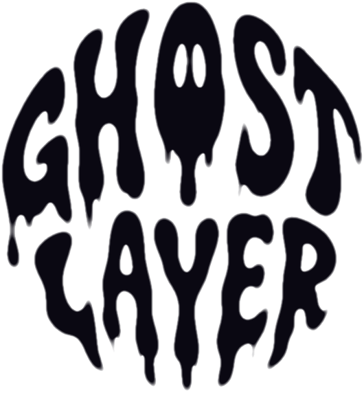

Uma marca para criadores que constroem mundos em cima do stream. Camada sobre camada, luz sobre o vazio.
Ghost Layer é a camada invisível entre a transmissão e quem assiste. Ela não aparece — ela transforma o que está por baixo.
Lettering líquido preso em um disco. O escorrido das hastes é a assinatura — nunca o corte, nunca o alise.

Void ocupa 70% de qualquer peça. Ultraviolet é energia, não fundo. Lilás e branco fazem a luz.
O lettering do selo é único e não se repete em texto. Títulos em Space Grotesk, dados e rótulos em JetBrains Mono.
Faísca de quatro pontas, grade de camadas e o escorrido. Combine no máximo dois por peça.
Molduras de 1 px em Plasma, cantos marcados, rótulos mono. O conteúdo é o herói — a moldura só respira.
Substitua os campos abaixo pelas fotos finais de mockup. A regra é sempre a mesma: fundo Void, um único ponto de luz violeta.